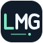

LMG / GOOGLE DRIVE
Tiến độ đi cùng bạn.
Đồng bộ địa điểm, nhóm theo dõi, ghi chú, setting bản đồ, preset và thứ tự preset, bookmark và profile giữa các máy. Dữ liệu vẫn được lưu trên máy khi bạn mất mạng.
Cập nhật LMG 1.3.0 trở lên trên mọi máy. Sau khi cập nhật, mở lại các trang bản đồ để thu thập setting cũ trước khi bấm Đồng bộ ngay. Khi nhận bản Drive, tải lại bản đồ để áp dụng setting và preset.
Trạng thái đồng bộ
Đang tảiĐang kiểm tra…
Tự kiểm tra mỗi phút khi Chrome chạy. Dữ liệu nằm trong vùng riêng của LMG trên Drive; không hiện thành thư mục thông thường. Không tải token đăng nhập MapGenie lên Drive.
Đã nhận dữ liệu mới. Hãy tải lại các tab MapGenie đang mở.
Chọn dữ liệu cần giữ
Các máy có dữ liệu khác nhau. Lựa chọn dưới đây áp dụng cho toàn bộ dữ liệu, setting và preset, không gộp từng địa điểm. Bản cục bộ được sao lưu trước khi thay thế.
Bản sao trên máy
Tải bản sao đầy đủ để lưu dự phòng. File này dùng định dạng database của bản LMG Drive; chức năng Export all games cũ vẫn dùng cho Data Manager.
Cập nhật LMG
Đang kiểm tra trạng thái…
Chạy Install-LMG-Updater.cmd một lần, chọn thư mục LMG đã Load unpacked. Windows tự kiểm tra mỗi 6 giờ, kiểm tra checksum, giữ OAuth và bản sao thư mục cũ. Extension tự nạp lại khi cài xong; các tab MapGenie đang mở cần tải lại để dùng mã mới.
Cấu hình lần đầu
Bản này dùng đăng nhập Google của Chrome. Hai máy cần cùng tài khoản Google, cùng bản extension và cùng OAuth Client ID.
- Trong Google Cloud Console, tạo hoặc chọn project và bật Google Drive API.
- Vào Google Auth Platform, cấu hình tên ứng dụng và email hỗ trợ. Với ứng dụng External ở chế độ Testing, thêm tài khoản của bạn vào danh sách Test users.
- Tạo OAuth client loại Chrome Extension (một số giao diện gọi là Chrome App), dùng Extension ID dưới đây:
- Thêm scope
https://www.googleapis.com/auth/drive.appdatatrong phần Data Access nếu giao diện yêu cầu. - Chạy lệnh trong thư mục extension, thay giá trị bằng Client ID vừa tạo:
node configure-drive.cjs YOUR_CLIENT_ID.apps.googleusercontent.com
Chỉ cần Client ID công khai, không cần Client Secret. - Ở trang quản lý extension của Chrome, nhấn Reload cho bản LMG Drive. Mở lại trang này và chọn Kết nối Google Drive.
- Chép cùng thư mục đã cấu hình sang máy thứ hai, cài bằng Load unpacked và kết nối. Nếu cả hai máy đã có dữ liệu khác nhau, LMG sẽ yêu cầu chọn bản cần giữ.
Trước khi đổi từ FMG hoặc bản LMG trước: Export all games để sao lưu, tắt bản cũ rồi cài bản mới. Không chạy hai bản cùng lúc. Nếu chưa thấy dữ liệu cũ, dùng Data Manager để nhập file export trước khi kết nối Drive.
ID ổn định nhờ public key trong manifest. Giữ nguyên key và cùng project OAuth trên mọi máy. Bản này chưa tự đăng nhập hoặc tải dữ liệu lên trước khi bạn kết nối. Drive giữ khoảng 20 phiên bản gần nhất và các nhánh chưa giải quyết.